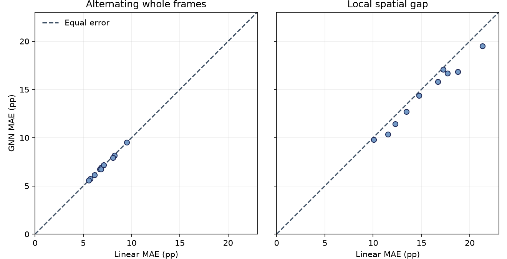
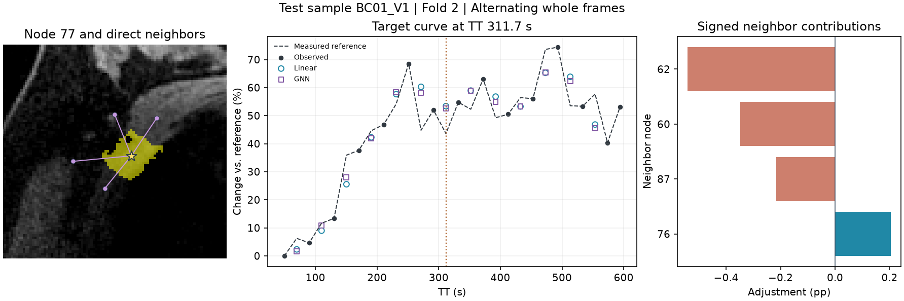
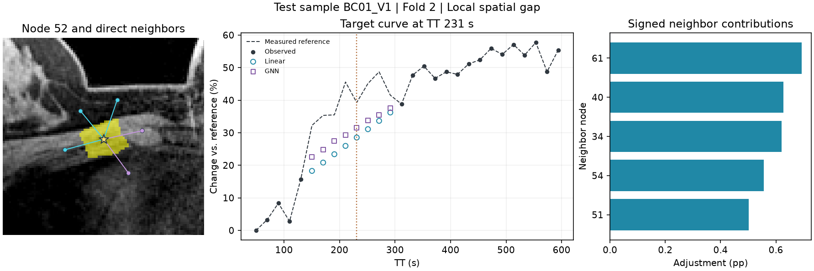

本轮 GNN 推理设备为 cuda:0 (NVIDIA GeForce RTX 5080)。指标统计和绘图在 CPU 上完成。
每位患者只用从未对该患者训练或选轮次的模型评估。两种方法在完全相同的隐藏点上比较，线性分数逐次访视核对到 03。先计算每次访视误差，再对同一患者的访视平均，最后对患者等权平均。表里的误差单位都是百分点，GNN − 线性为负表示 GNN 更准。
| 缺失方式 | 测试患者数 | 线性 MAE | GNN MAE | GNN − 线性 | GNN 改善人数 |
|---|---|---|---|---|---|
| 整帧隔点隐藏 | 10 | 7.08 | 7.06 | -0.02 | 6/10 |
| 局部连续缺失 | 10 | 15.39 | 14.45 | -0.94 | 10/10 |

逐患者结果 · 逐访视结果 · 含 RMSE 的汇总表 · 训练与划分。
两张图来自同一个预先选定的测试访视。示例节点按掩码和邻接选择，局部缺失时优先展示仍能接收到实测邻居的节点。

示例 BC01_V1，节点 77，TT 311.7 秒。线性值 +53.40%， 所有邻居的贡献合计 -0.90 个百分点，GNN 值 +52.50%。原实测值 +43.61% 用来核对。
| 邻居编号 | 该时刻数据 | 邻居值 (%) | 权重 | 加权贡献 (百分点) |
|---|---|---|---|---|
| 62 | 线性估计 | +52.70 | 0.246 | -0.54 |
| 60 | 线性估计 | +122.77 | 0.250 | -0.35 |
| 87 | 线性估计 | +55.65 | 0.251 | -0.22 |
| 76 | 线性估计 | +36.43 | 0.254 | +0.21 |

示例 BC01_V1，节点 52，TT 231 秒。线性值 +28.52%， 所有邻居的贡献合计 +3.00 个百分点，GNN 值 +31.52%。原实测值 +39.28% 用来核对。
| 邻居编号 | 该时刻数据 | 邻居值 (%) | 权重 | 加权贡献 (百分点) |
|---|---|---|---|---|
| 61 | 线性估计 | +82.28 | 0.204 | +0.69 |
| 40 | 实测 | +45.76 | 0.199 | +0.63 |
| 34 | 实测 | +41.67 | 0.198 | +0.62 |
| 54 | 实测 | +24.78 | 0.197 | +0.56 |
| 51 | 线性估计 | +21.77 | 0.201 | +0.50 |
这些贡献解释的是模型怎样算出该点的修正。整体误差比较检验这套模型在当前数据和缺失设置下的表现。要单独测量正确邻接关系的价值，可以另做遮蔽邻居或打乱连接实验。